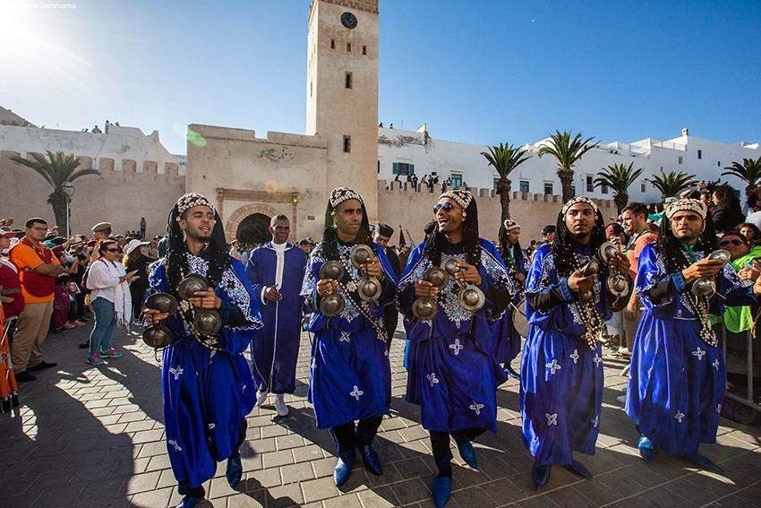

Festivals · Music
Gnaoua and World Music Festival 2027
- Dates
- –
- Venue
- Place Moulay Hassan and stages across Essaouira
- Location
- Essaouira, Morocco
- Format
- In-person
- Category
- Music
- Industry
- World music festival
- Organiser
- Festival Gnaoua et Musiques du Monde
- Expected attendance
- 400,000
- Official website
- https://www.festival-gnaoua.net/en/home/
About
28th edition. Official English home page: 'See you from June 24 to 26, 2027, to celebrate the 28th edition together!' City-wide stages in Essaouira, with Place Moulay Hassan the historic main square. Morocco dates are local (Africa/Casablanca; typically UTC+1, with occasional Ramadan clock changes).
Topics: Gnawa music, world music, heritage, live music.
Official 'Les chiffres clés' page for the 2027 festival (fetched 24 Nov 2026) states that over three days Essaouira welcomes more than 400,000 festival-goers ('plus de 400 000 festivaliers'), with 300+ artists on 7 stages. The official closing press release for the 27th edition (25–27 June 2026) separately reported more than 300,000 attendees. Used the current official key-figures floor of 400,000.